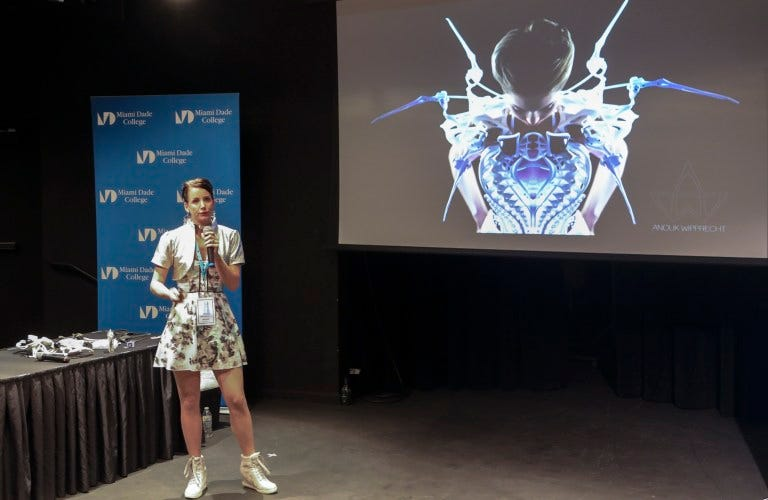

Anouk Wipprecht is a well-known designer of robotic fashion. To her, artistic expression is not enough: She wants her creations to move and breathe and communicate. One of her gowns appropriately called the Spider Dress, senses and communicates quite aggressively if someone is invading the wearer's personal space because robotic limbs embedded into the shoulder area of the dress will go into attack mode.

She also created a robotic cocktail dress that quite literally pours a drink for you, and she open-sources her tutorials so you can make one too.
Over the weekend, Anouk gave a keynote talk about how she envisioned, created and iterated her fashions at Maker Faire Miami, which brought thousands of maker enthusiasts of all ages to the two-day event at Miami Dade College.
"Maker Faires are awesome, they create a meeting place to see all my fellow collaborators and artists. It's a great place for people to celebrate the notion of innovation, and making and creating together. Everything here - it's the future," said Anouk, who got into robotics when she was 17.
Robots and Innovation
Entering the Faire, it was hard to miss Miami Coral Park's team of robots who were zipping around the walkway and entertaining the Faire goers. Coral Park, which is a magnet school for engineering, has a very active robotics club with 90 to 100 student members who compete in FIRST Robotics competitions at the highest level.
Andrea Suarez, part of the Miami engineering group behind Team Witch Doctor in the BattleBots television show, shared insights about the process leading up to televised episodes. Two years ago, this Miami BattleBots team opened MakerMIA, a makerspace for the community with classes for kids 6 and up to learn how to build 1-pound robots.
Inspiring the Next Generation
Abby K., an 11 year old student at Pinecrest Academy South, didn't think enough girls at her school were interested in robotics so she set out to change that. Now she has an active YouTube channel, Vex iCutie, where she offers inspiration and practical tutorials.
Exhibitors came from far and wide to participate in Maker Faire Miami, including a makerspace from Guatemala, a Mayan e-robotics club, and a Machine Perception and Cognitive Robotics lab from FAU.
Magic Wheelchair Project
Maker Ian Cole presented a Magic Wheelchair project, where Maker organizations turn a child's wheelchair into something magical. In less than four weeks, 27 Makers with MakerFX in Orlando, MakeMIA and other Florida groups transformed young Alex's wheelchair into Bumblebee of the Transformers.
Future of Making
The Maker Faire was all about inspiring the youngest of kids. Giovanni Martinez, 10, brought his creation, the "Cherry Copter" - a mix of a plane and helicopter - to the Moonlighter Makerspace booth to proudly put on display. He's been learning about wood cutting and 3D modeling at Moonlighter, a STEAM Learning center and community Fabrication Lab in Wynwood.
With the end of a successful Faire weekend, Mario the Maker is already thinking up how to make next year even bigger - bringing in more schools and makers to participate and getting local tech experts to mentor ongoing maker projects.
Maker Faire Miami is presented by Miami Dade College and MANO, and sponsored by The Knight Foundation, Make:, Santander, Prusa Research, Microsoft and Particle.
By @ndahlberg and @MarioCruz. Originally published at miami.makerfaire.com on April 17, 2019.
Related
-
Why You Should Attend Maker Faire Miami 2023
Four years later, the Faire kept growing.
-
Producer in Residence at Maker Faire Bay Area
Miami producing on the national stage.